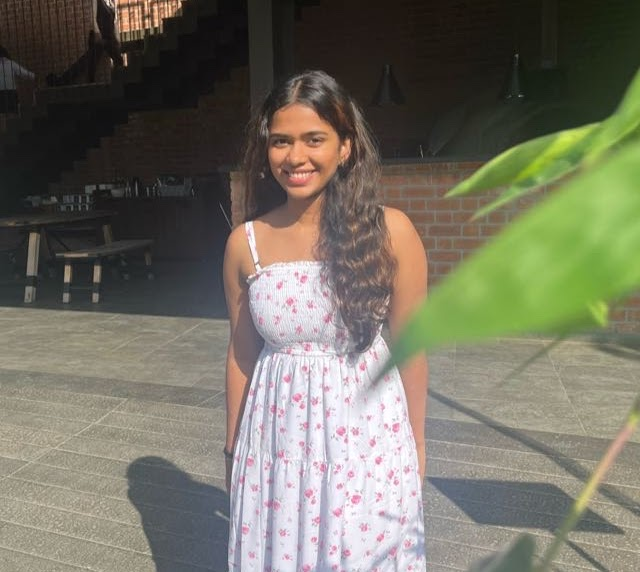

Hasini Namburi
Co-Founder
Hi! My name is Hasini and I am a rising senior at high school. I have always been someone passionate about interacting with people from various backgrounds to better understand them.
This passion of communication and reaching out especially to those who most require it led me to join this non profit organization where we associate with helping centers and care for individuals in a small yet meaningful manner.
Some of the things I enjoy doing include dancing, painting and hanging out with friends. I am an avid enthusiast of engineering solutions to current problems.